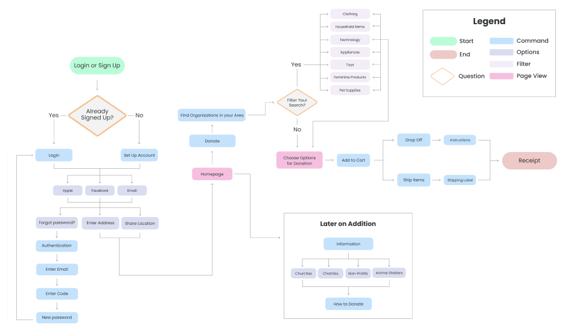

The Problem
Trying to get rid of unwanted items can be very time consuming and it is hard to find where to donate items sustainably. Sustainability is important to most people, but it is difficult when people are uninformed or don’t have the time to research what places accept unwanted items.
The Solution
DonateKind informs and helps users donate their unwanted items to charities,
non-profits, animal shelters and churches by providing them with a quick and easy way to declutter their home sustainably and give back to their community.
Lo + Mid-fi Wireframes
After sketching out a few different versions, based on our user flow, we then combined all the best features into a mid-fidelity prototype to use for user testing.

We took all our favorite components from the low-fidelity to create a mid-fidelity prototype. We used buttons and different shades to help give a contrast to the different sections. Once completed, we created a user testing plan to see how functional the prototype was.

User Flow
A user flow was created to help understand patterns users will take when using the app. This helped create a more intuitive product so that users can easily accomplish their goals.
